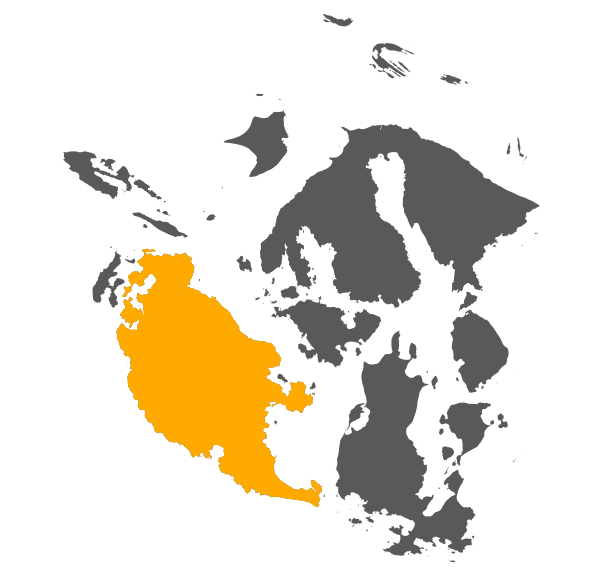
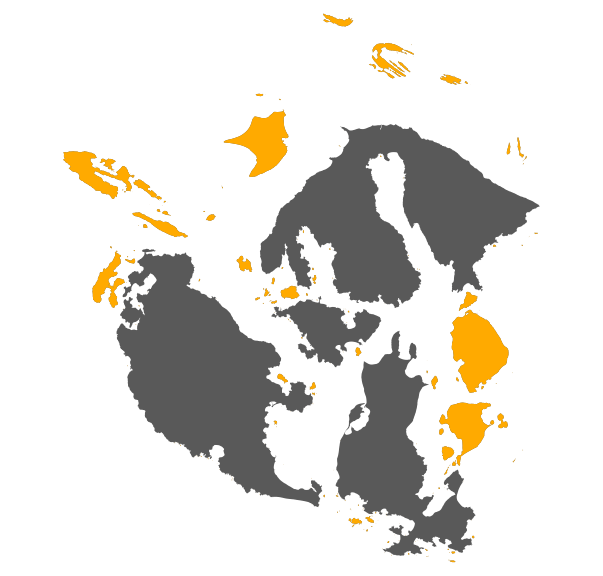
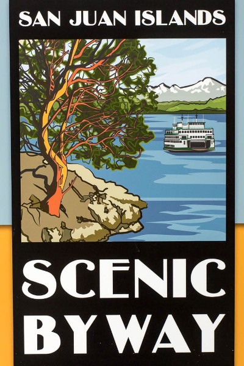
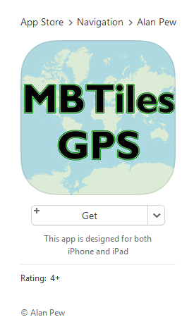
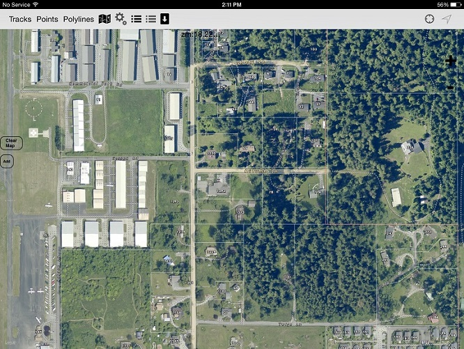

Offline Mobile Map Solutions
Nick Peihl, San Juan County
npeihl.com / @npeihl
Total Population: ~16,000
San Juan

Others

Getting to the islands

Case Studies
Case Study 1
Public Works needs to collect data points from several locations in field
Assets
- Android phones w GPS
- Aerial Imagery TMS (2013)
Limitations
- No mobile data service
- Low storage space
- No mobile app dev
Solution
Geopaparazzi
- Open Source App
- Collect GPS locations and paths
- Reads MBTiles
MBTiles
MBTiles is a specification for storing tiled map data in SQLite databases for immediate usage and for transfer.
Details
.mapurl files
url=http://tile.openstreetmap.org/ZZZ/XXX/YYY.png
minzoom=0
maxzoom=19
center=11.42 46.8
type=google
format=png
defaultzoom=13
mbtiles=defaulttiles/_mapnik.mbtiles
description=Mapnik - Openstreetmap Slippy Map Tileserver
parameter details
Tiled ArcGIS Service example
url=http://sjcgis.org/arcgis/rest/services/Basemaps/Aerials_2013_WM/MapServer/tile/ZZZ/YYY/XXX
minzoom=10
maxzoom=19
center=-123.0 48.5
type=google
bounds=-123.395004 48.354880 -122.417221 48.749851
format=jpg
defaultzoom=13
mbtiles=defaulttiles/_sjc-aerial2013.mbtiles
description=San Juan County WA Aerials 2013
Workflow
Before leaving office...
- Add .mapurl file to device
- Open Geopaparazzi and load .mapurl source
- Pan to location(s) for field work
- Zoom to all levels in location(s)
- Tiles are saved on device for offline use
Advantages
- Very stable app
- Small storage footprint
- Fairly easy setup
Disadvantages
- TMS must be Slippy Map specs (Web Mercator)
- Pre-cache all locations
- Limited to single visible tile source (issue 286)
Case Study 2
Appraisers from Assessor's Office getting lost in field
Assets
- iPad Air w GPS & 64GB
- Aerial Imagery TMS
- Reference Overlay TMS
Limitations
- No mobile data service
- No mobile app dev
Solution

MBTiles GPS
Portable Basemap Server
But I don't have admin access
var tilelive = require("tilelive");
require("tilelive-http")(tilelive);
require("mbtiles").registerProtocols(tilelive);
var template = "http://tile.openstreetmap.org/{z}/{x}/{y}.png";
var scheme = tilelive.Scheme.create("scanline", {
minzoom: 12,
maxzoom: 15,
bbox: [-122.578926,47.509548,-122.051926,47.684575]
});
var copyTask = new tilelive.CopyTask(template, "mbtiles://./osm-sea.mbtiles", scheme);
copyTask.formats = ["tile"];
copyTask.start(function(err) {
if (err) {
throw err;
}
});
copyTask.on("progress", console.log);
copyTask.on("finished", function() {
console.log("Done!");
});
tilelive-http
Adhere to usage restrictions and licenses
Limit your bbox and levels
/* DON'T DO THIS */
var scheme = tilelive.Scheme.create("scanline", {
minzoom: 0,
maxzoom: 19,
bbox: [-180,-90,180,90]
});
var copyTask = new tilelive.CopyTask(template, "mbtiles://./all-the-things.mbtiles", scheme);
copyTask.formats = ["tile"];
copyTask.start(function(err) {
if (err) {
throw err;
}
});
copyTask.on("progress", console.log);
copyTask.on("finished", function() {
console.log("I've taken over the world!");
});
MBTiles GPS

Advantages
- Countywide offline tiles
- Multiple tile sources visible
- No prep work
Disadvantages
- TMS must be Slippy Map specs
- Unstable app
- Moderately difficult setup
{kind=link}
{kind=link}
{kind=link}